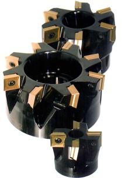
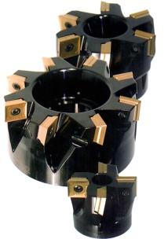

|
CNC
TAKIM TEZGAHLARI
A-
CNC TORNA TEZGAHLARI:
Nümerik
kontrollü torna tezgahlarda genelde X ve Z ekseni olmak üzere
iki temel eksen vardýr. Bu tür takým tezgahlarýnda pek çok
profil tornalama iþlemlerinin yapýlabilmesi için doðrusal
interpolasyon (Linear Interpolation) ve eðrisel interpolasyon
(Circular Interpolation) iþlem özelliði yeterlidir. Ayrýca
devir sayýsý ve kesici deðiþtirme, ilerleme hýzýnýn belirlenmesi
vb. fonksiyonlara sahiptirler.
Ýþleme
kapasiteleri daha geniþ olan CNC torna tezgahlarýnda eksen
sayýlarý 3 yada daha fazla olabilir. Üçüncü eksen tezgah taretinin
eksen hareketi olabilir. Özellikle endüstriyel tip CNC torna
tezgahlarýnda (Industrial type CNC lathes) tezgahýn yapýsal
direncini artýrmak, daha hassas imalatý gerçekleþtirebilmek
ve çýkan talaþlarý kesme bölgesinden uzaklaþtýrabilmek için
yapýsal ayrýntýlarýnda bazý dizayn deðiþiklikleri yapýlmýþtýr.
(Þekil A-1)
Þekil
A-1 CNC torna tezgahý
B-CNC
FREZE TEZGAHLARI
CNC
Freze tezgahlarý operasyon yeteneklerinin çeþitliliði bakýmýndan
iþleme merkezlerinden sonra en çok iþlem kabiliyetine sahip
olan tezgahlardýr. (Þekil B-2) Bu tür tezgahlar en az 3 olmak
üzere 4-5 ve daha fazla eksende iþlem yapabilme özelliklerine
sahiptir. Bu tezgahlarýn bütün çeþitleri sürekli iz kontrol
(Continuous Paht Control) ile donatýlmýþtýr. Otomatik kesici
deðiþtirme (Automatic Tool Change) kolaylýklarý bir baþka
özellikleridir. Kesici telafisi (Tool Compensation) özellikle
eðrisel frezeleme iþlemlerinde ve kalýpçýlýkta büyük kolaylýk
saðlar.
Þekil
B-2 CNC Freze tezgahý
  
Þekil
B-3 CNC tezgahlarýnda kullanýlan kesici uçlar
Üç
boyutlu (3 Dimension) iþ parçalarýnýn ideal profil ve optimum
özellikte iþlenmeleri baþarýyla gerçekleþtirilir. Kullanýlan
kesiciler, uçlarý radyuslu ve yüksek kesme hýzýna sahip sert
maden ve titanyum kaplý uçlardýr. (Þekil B-3)
C-
CNC ÝÞLEME MERKEZLERÝ:
Bu
tür CNC tezgahlarý noktasal hareket (Point to Point) ve sürekli
iz kontrolü (CPC) ile donatýlmýþtýr. Böyle kompleks ve çok
sayýda operasyonlara sahip iþ parçalarýnýn imalatlarý bir
baðlamada gerçekleþtirilir. (Þekil C-1)
a-
Yatay iþleme merkezi
b- Düþey iþleme merkezi
Þekil
C-1 CNC iþleme merkezleri
CNC
ÝÞLEME MERKEZLERÝNÝN KAREKTERÝSTÝK ÖZELLÝKLERÝ:
-
Prizmatik iþ parçalarýnýn bir baðlanýþta 3 hatta 4 yüzeyi
ayný anda iþlenebilir.
-
Alýn frezeleme, delme delik büyütme rayba ve kýlavuz çekme,
profil iþleme, açýlý delik delme vb. iþlemler yapýlabilir.
-
Kullanýlacak olan kesiciler tezgahýn magazin kýsmýna yerleþtirilir
ve program içerisinde gerekli olan iþlemlerde kullanýlýr.
Magazinler 10-30-60-80 yada daha fazla kesici kapasitesinde
sahiptir.
-
Ýþ parçalarýnýn tezgaha baðlanma ve çözülme iþlemlerinde
robot kol ve ekipmanlar kullanýlýr. Böylece bu alandaki
zaman kayýplarý ortadan kaldýrýlýr.
D-
CNC MATKAP TEZGAHLARI:
CNC
matkap tezgahlarý (Þekil D-1) iþlem fonksiyonlarý bakýmýndan
konvansiyonel türlerinden çok farklý deðildir. Baþlý baþýna
CNC matkap tezgahý olarak deðil küçük kapasiteli düþey iþleme
merkezi olarak tasarlanýrlar. Tezgah tablasýnýn hareketleri
X ve Y eksenleri, kesicinin hareketi ise Z ekseni doðrultusundadýr.
Bu
tür tezgahlarda pek çok olasýlýklar söz konusudur. (Tabla
sabit kesicinin baðlandýðý baþlýk koordinat eksenlerinde hareket
edebilir. Birden fazla tezgah mili ve tablasý bulunabilir.)
Özellikle basit frezeleme, delme ve delik büyütme iþlemlerinde
çok kullanýþlýdýrlar.
Þekil D-1 Matkap tezgahý fonksiyonlu düþey iþleme merkezi
DELME
OPERASYONLARINDA ÝÞLEM BASAMAKLARI:
Kesici alet delinecek hedef noktanýn X ve Y koordinatlarýna
gönderilir. Hedef noktaya ulaþýldýðýnda kesici iþ parçasý
yüzeyine emniyetli bir mesafeye (Clearance Height) kadar süratle
yaklaþýr. Ýþ parçasýnýn delinme iþlemine baþlanýr. Eðer delik
derinse kesici bir miktar geri çýkarýlarak talaþlar boþaltýlýr
ve tekrar delme iþlemine devam edilir. Delme iþlemi bitiminde
kesici süratle parça dýþýna çýkarýlýr. Kesici bir sonraki
delik için belirlenen koordinatlara gönderilir. CNC matkap
tezgahlarýnda ayna görüntü (Mirror Image) ve tekrar (Repeat)
döngüleri çok yaygýn olarak kullanýlýr. Ayna görüntü için
gerekli olan X ve Y koordinat deðerleri girilir. Tekrar döngüsünde,
tekrar sayýsý ve iþlemin uygulanýlacaðý X ve Y koordinat tanýmlamalarý
yapýlýr. Böylece program bir hayli kýsaltýlmýþ olur. Farklý
kesici boyutlarý ile ilgili deðerlerin tezgah kontrol ünitesinin
ilgili birimine kesici uzunluk telafisi (Tool Length Compensation)
olarak giriþleri yapýlýr. Otomotik kesici deðiþtirme (ATC)
kolaylýðý ile fazla sayýda kesici kullanýmýnda imalata büyük
bir hýz kazandýrýlýr.
E-
CNC TAÞLAMA TEZGAHLARI
Silindirik
ve düzlem taþlama iþlemlerinde yüksek hassasiyet ve yüzey
kalitesi elde edilmesi gerekir. Bu nedenle özellikle teknolojik
bakýmdan Nümerik Kontrolün temel felsefesine çok uygundur.
Ne yazýktýr ki bu alanda NC kullanýmý son yýllarda olmuþtur.
Taþlama ile ilgili bazý özel problemlerini baþarý ile çözümleyen
imalatçý firmalar Nümerik Kontrolü imalatlarý ile bütünleþtirerek
kendi NC sistemlerini geliþtirmiþlerdir. (Þekil E-1)
Þekil
E-1 CNC taþlama tezgahý
Torna
ve freze tezgahlarýnda kullanýlan standart kontrol tasarýmlarý
taþlama tezgahlarýnda kullanýþlý deðildir. Bu nedenle taþlama
tezgahlarýnýn kontrol sistemlerinde diðer tür tezgahlardan
farklý çözümlere ihtiyaç vardýr. Bunlar ;Bazan 0. 1 mikrona
varan yüksek hassasiyet. Çok geniþ bir ilerleme hýzý alaný.
Ýlerleme hýzlarý 0. 02 mm/dak. Ýle 60 m/dak. arasýnda deðiþir.
Taþlama iþlemleri ile ilgili özel taþlama döngüleri (Canned
Grinding Cycles) . Kademeli ilerleme artýþý, bekleme, salýným,
rutin, taþ bileme vb. bu döngülere örnektir. Otomotik kesici
telafisinin zýmpara taþýnýn bilenmesinden sonra yapýlmasý.
Doðrusal (Linear) ve eðrisel (Circular) interpolasyon hýz
kesilmeden yapýlmalý. Herhangi kontur sapmalarýnda zýmpara
taþýnýn bilenmesi. Programa sonradan yapýlacak veri giriþleri
ve düzeltme iþlemlerinin kolaylýkla yapýlabilmesi. Taþlama
tezgahlarýnda kullanýlan kesici miktarý fazla olmadýðý için
telafi iþlemi daha basittir.
F-
CNC PRES VE ZIMBALI DELÝCÝLER:
|
|
Þekil
F-1 CNC zýmbalý deliciler |
CNC
Pres ve zýmbalý delicilerle konum deðiþtirmeler iki eksenli
sürekli iz kontrolü þeklinde ve yüksek deðerlerde yapýlýr.
Programlanabilen kurs ilerlemesi sac malzemelerin kalýnlýklarýna
göre deðiþtirilebilir. Genelde bu tezgahlarda imal edilen
parçalar benzerdir. Bu nedenle program hafýzalarý geniþ ölçüde
kombine ve tekrarlanabilir programlama yeteneklerine sahiptir.
(Þekil F-1)
Zýmbalý
delicilerde zýmba þekilleri basitten kompleks profillere kadar
deðiþik iþlem yapabilecek özelliklere sahiptir. Bunun için
yaygýn olarak kullanýlan zýmbalar standartlaþtýrýlmýþ ve hazýr
olarak bulunabilir. Yine bu tür tezgahlarýn zýmba uçlarýnýn
otomatik olarak deðiþtirilme özellikleri de vardýr. Zýmba
taretlerinin en yaygýn olarak kullanýlan 36 istasyonlu olanlardýr.
Bilgisayar yardýmý ile imal edilecek parçalar ve sac plakalar
üzerine yerleþtirilir. Böylece en az fire verebilecek þekilde
optimum parça yerleþimi saðlanýr. Parçalarýn taþýnmalarý ve
tezgaha sürülme iþlemi, mamül ve artýk parçalarýn uzaklaþtýrýlmalarý
programlý taþýyýcýlar yardýmýyla yapýlýr.
G-
CNC NOKTA KAYNAK MAKÝNALARI:
Nümerik
Kontrollü Nokta Kaynak Makineleri (Numerical Controlled Spot-Welding
Machines) son yýllarda özellikle otomotiv endüstrisi alanýnda
uygulamaya konulmuþtur. Parçalarýn transfer hatlarý üzerinde
kaynaklanmasý manuel kaynaklamaya göre büyük bir baþarýyla
gerçekleþtirilir. Karmaþýk geometriye sahip parçalarý seri
ve istenilen tamlýklarda kaynaklanýr.
Program
ilk parçanýn yapýmýyla düzenlenir ve tekrarlanýr. Bu iþlem
'Playback' tekniði olarak isimlendirilir. Yani kaynak yapýlacak
parçanýn her bir kýsmý manuel olarak ayarlanýr ve klavye aracýlýðý
ile hafýzaya giriþi yapýlýr. Böylece yardýmcý koordinat hesaplamalarý
da ortadan kalkmýþ olur. CNC nokta kaynak makinelerinin pek
çoðu CNC kaynak hattýyla þebekelendirilir. Ýþlem esnasýnda
hafýzadan gerekli olan kaynak programý çaðrýlýr ve kaynak
iþlemi yapýlýr.
Bu
makinelerdeki CNC temelde operasyon kontrolünden çok makine
kontrolüdür. Oksiasetilen, plazma yada lazer kesicilerde iþlemi
yapan baþlýk tezgah milidir. Eðer bu baþlýklar yerine bir
kaynak torku takýlýrsa CNC kaynak makinesi elde edilir. Kaynak
iþlemlerinde robot kullanýmý en baþarýlý ve yaygýn olan uygulamadýr.
DÝÐER
TÜR CNC TAKIM TEZGAHLARI:
Yüksek
verim ve hassasiyetinden dolayý CNC günümüzde her türlü imalat
sisteminde yaygýn olarak kullanýlmaktadýr. Otomatik kesici
deðiþtirme özellikleriyle de otomasyonda büyük ölçüde kolaylýk
ve zaman tasarrufu saðlar.
Günümüzde
CNC 'nin kullanýldýðý tezgah çeþitleri yalnýzca yukarýda bahsedilenler
deðildir. Ancak bunlar en yaygýn olarak kullanýlanlardýr.
Bunlarýn dýþýnda CNC 'nin kullanýldýðý tezgah türleri:
-
Üç boyutlu ölçme ve kontrol tezgahlarý
-
Alet bileme tezgahlarý
-
Testere tezgahlarý
-
Montaj sistemleri
-
Erozyon tezgahlarý
-
Kaplama tezgahlarý
-
Malzeme taþýma sistemleri
-
Lazer kesme tezgahlarý
-
Boru bükme makineleri
-
Sývama tezgahlarý
-
Alevle kesme makineleri
|